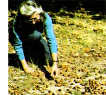
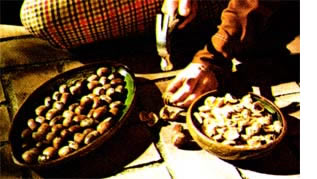
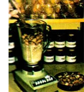
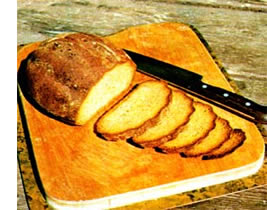

Look around you: One of mankind's oldest and most versatile "staple foods" is as close as your nearest park or forest... or maybe even your front yard!
Time was-back in the days when the fruit of the oak tree supported a large population of native Americansthat the hills and valleys of California resounded with the sound of acorns being pounded in stone mortars. White settlers, of course, never learned to tap the rich store of nutrients contained in these kernels (perhaps because they had no patience for the laborious grinding and leaching processes that were necessary to make the nuggets edible), and-as a result-acorns (as food for humans) went out of style in the U.S. around the turn of the century.
And yet-appreciated by modern man or not-acorns (millions of tons of them each year) go on growing and dropping to the ground . . . not just in California (where the shiny kernels are so plentiful in the fall that the natural population of jays, squirrels, and chipmunks can't even begin to eat them all), but in the rest of the country, too. What a shame more people don't recognize this yearly bumper crop for the excellent source of nutrition that it is!
You can take advantage of some of this free bounty for yourself. It's a simple matter to harvest a season's supply of acorns, process them into a coarse, meal-like flour, and adapt the flour to your favorite bread, muffin, and cake recipes. Our family has been doing this for some time now, and we've found acorn-meal dishes so rewarding (in taste, nutrition, and sheer fun) that we're anxious to share our "secret" with others!
You shouldn't have any trouble finding a suitable ° "hunting ground" for acorns, since some kind of oak grows in virtually every part of the U.S.
As for the harvest itself: Your family can make old-time fun out of collecting acorns in a shady grove. The work (if it can be called that) goes quickly and, in less than an hour, you should have all the acorn: you can readily process at one time (If you really want to gather the lit tle oak nuts fast, you can take the advice of Carl B. Wolf of the Ranch( Santa Ana Botanic Garden, who proposedback in 1944-that com mercial growers use power vacu ums to simply "inhale" acorns from the forest floor!)
Acorns are best shelled with a conventional nutcracker or a pair of pliers. Simply grip each nut the long way and pinch . . . then grip it the short way and pinch. Presto! Out pops the clean, white kernel! (Witt a little practice, you'll have no trou ble getting each nugget out intact.)
If you're hulling a particularly large quantity of acorns, you migh~ want to dry them slowly in a 100°F oven or food dryer, allow the nuts to cool, and then pass a heavy roller over the brittle shells. Actually though, even if you hull the crop b3 hand you'll be pleasantly surprisec at how fast the pile of cleaned meat: grows. (And those oblong beauties are all meat, too: They have no pesky membranes or partitions, a; do chestnuts or walnuts.)
This is where technological gad. getry comes in handy: I use an elec tric blender to grind acorn meats to pulp in a matter of seconds. (If you don't have a blender-or even if you doyou can, of course, try the mor- tarand-pestle method of grinding It's more time-consuming . . . buy the final result is the same.)
All you have to do with a blender is dump in a cup of shelled acorns fill the blender's container on up with water (the exact amount o: liquid is unimportant), and whiz away at high speed for a minute or two. When you're done, you'll have a thick, cream-colored goo that looks utterly delicious but is-in factunpleasantly bitter due to the high concentration of tannins in the slurry. Our next job is to remove these bitter substances, via a process known as leaching.
Fortunately, the substances that make most (but not quite all) acorns bitter are water-soluble. Which means that to get rid of the bitterness, all you usually have to do is [1] pour your acorn pulp into a dish-towel-lined colander, [2] place the colander under slow running water, and [3] gently work the pulp around with your hand, allowing the liquid to wash the acorn meal.
Continue to stir the meal in this fashion for about five minutes-or until the "creamy" look is gone and the water runs clear-then taste it. If the grinds are still bitter, rinse them a minute more . . . then taste 'em again. When leaching is complete, the finished product will be rather blandtasting ... almost sweet.
OK. All that's left now is to press the excess liquid out of the dishtowelwrapped acorn solids, then place the doughy meal in a storage container. The finished acorn pulp will have about the consistency of the wetground cornmeal that Mexicans call masa. Borrowing their terminology, I call our product "acorn masa".
For long-term storage (Le " a week or more), acorn masa can be frozen. (If the meal is left exposed to the air, it will oxidize to a darkbrown color. The taste, however, will be unchanged.)
The possibilities are almost endless! Add acorn masa to mush, stew, or soups. Use it in turkey stuffing. Make an Indian pudding, substituting acorn masa for cornmeal. Or use the pulp to replace part of the called for by your favorite ad, cake, or cookie recipes. (When you do do this, be sure to cut down a bit on the liquid and shorten the recipe, since the wet meal high in both vegetable oil and water) Acorn meal has a mildly flavor and makes breads and cakes richer, moister, browner, and more delicious. don't take my word for all this though. Try making one of the acorn-masa delicacies described and see for yourself how flavorful and satisfying the fruit of oak can be.
a bowl, blend together:
1 egg
1 tablespoon of honey
1 Tablespoon of cooking oil
1/2 cup of acorn masa
Then add:
1/2 cup of stone-ground cornmeal
1/2 cup of whole wheat flour
2 teaspoons of double-acting baking powder
1/2 teaspoon of salt
Stir enough milk into the above
Future to make a thin batter. Then pour the batter out onto a hot, greased skillet and fry the cakes Slowly on both sides until brown. Serve with plenty of butter and honey.
Seat together in a bowl:
2 tablespoons of cooking oil
3 tablespoons of molasses
1 egg
Stir in:
1/2 cup of milk
1 cup of acorn masa
Then add:
1 cup of whole wheat flour
1 teaspoon of double-acting baking powder
1/2 teaspoon of soda
1/4 teaspoon of salt
1/2 teaspoon of ginger
Stir quickly until all the dry ingredients are moistened and the batter is slightly lumpy. Then pour the batter into a greased muffin tin and bake at 425°F for 20 to 25 minutes. Remove the tin from the oven, allow it to cool five minutes, turn the muffins out, and serve.
2 cups of lukewarm water
1 tablespoon of dried yeast
1/4 cup of cooking oil
1/4 cup of honey
2 eggs
2 cups of acorn masa
1 teaspoon of salt
1 tablespoon of brewer's yeast (optional)
6 cups of flour (white or whole wheat)
Pour the water into a large bowl and add the tablespoon of dried yeast. Let stand until the yeast is soft, then stir.
Next, add all the remaining ingredients except the flour to the bowl and beat well. Then stir in about four cups of the flour and [1] pile one cup of flour onto a bread board, [2] make a well (a depression) in the center of the mound, and [3] turn the batter out into the well. Working from the outside in, gradually knead the mass, adding enough extra flour (about a cup total) as you go along to make a stiff dough. Knead for ten more minutes or until the dough is smooth and doesn't stick to your hands. (Add more flour, if necessary.)
Now flour the bowl lightly, place the dough in it, cover with a cloth, and allow the bowl to stand in a warm place until its contents have doubled in size (about one hour). Turn the dough out, shape it into two loaves, and place the loaves into oiled bread pans . . . then lightly oil the tops of the loaves and set them in a warm place to rise. When they're almost double in size, bake the loaves at 350°F for 40 minutes (or until well browned). Finally, turn the bread out onto a rack and let it cool before slicing.
Acorn bread keeps very well, by the way . . . if you have any left over after your first "tasting session"!
Blend together in a bowl
1/2 cup of cooking oil 1 cup of sugar
2 eggs
1/2 cup of acorn masa
In another bowl, sift together:
1-1/4 cups of flour
1/8 teaspoon of salt
1/2 teaspoon of cream of tartar
1/4 teaspoon of soda
Stir the second mixture into the first (a small amount at a time) alternately with 1/4 cup of milk. (NOTE: You can substitute one cup of honey for the cup of sugar specified above . . . but, if you do, you should also substitute a quarter cup of dried milk for the quarter cup of milk just listed.) Add 1/2 teaspoon of vanilla extract and 1/4 teaspoon of mace and beat well. Pour the batter into an oiled and floured circular pan (8" inside diameter) and bake at 350° for about one hour. No need to make frosting . . . this is one cake that's plenty good "as is"!
|
|
 |
 |
|
 |
|
 |